این جزوه چه چیزی است؟ روایتِ کاملِ ۳۲ دقیقه و ۷ ثانیه صدای استاد، قطعهبهقطعه و
بیجاافتادگی، همراه با متن دقیق همان اسلاید که در حین صحبت روی پرده بوده است.
هیچ قطعهٔ صوتیای حذف نشده و هیچ بخشی از سخن استاد بدون پوشش نمانده است.
۳۴ تصویر اسلایدها هم در جای مناسب هر بخش (و پیوست الف-۲) جاسازی شدهاند.
| نشان | معنا |
|---|---|
| 🎙 استاد گفت | بازسازیِ پاکسازیشدهٔ سخن استاد — وفادار به صدا، با کمک متن اسلاید فقط برای رفع ابهامِ اصطلاحات |
| 📊 اسلاید | متن دقیق و بدون دخلوتصرف همان اسلاید (از XML خود فایل pptx خوانده شده) |
| 📌 برداشت | توضیح تکمیلی و جمعبندی — از متن اسلاید و دانش تخصصی، نه از صدای استاد |
| ⏱ | زمان شروع قطعه در نوار ۳۲ دقیقهای + شمارهٔ قطعه و اسلاید |
| 📷 | تصویر خودِ اسلاید (استخراجشده از فایل pptx) با توضیح فارسی |
| نشان | معنا |
|---|---|
| 🟢 | صدای استاد در این بخش روان و قابلفهم پیاده شده — بازسازی، بسیار وفادار |
| 🟡 | بخشی از کلمات با کمک متن اسلاید بازسازی شده — محتوا درست، ولی جملهها آزادترند |
| 🔴 | صدا برای مدلِ موجود ناخوانا بود؛ فقط خطِ کلیِ مطلب از صدا گرفته شده و شرح از اسلاید است |
شفافیت کامل: هیچ مدل فارسیِ بهتری از داخل این محیط قابل دریافت نبود (تمام مسیرها در
asr-accuracy.mdفهرست شده). برای جبران، هر قطعه با ۶ جریان مستقل تشخیص گفتار پیادهو واژهبهواژه رأیگیری شد؛ ۹۰٫۵٪ واژهها تأیید ≥۲ جریان دارند. با این حال این جزوه
«نقلقولِ کلمهبهکلمه» نیست؛ برای استناد، فایل صوتی (پوشهٔ
audio/) را بشنوید.متن خامِ بدون بازسازی:
transcript-fa-v3.md.
پیوست الف: اسلایدهای ۳۷–۶۶ · پیوست ب: فرمولها و جدولها · پیوست پ: واژهنامه · پیوست ت: شفافیت و روش
<a id="۱"></a>
⏱ 00:00 — قطعهٔ ۱ · اسلاید ۱ · 🟡
🎙 استاد گفت:
«با سلام؛ بحث را برای درس فیزیوپاتولوژی شروع میکنیم.»
📊 اسلاید ۱ (متن دقیق): ECG · Dr M. Zadkamali · Cardiologist / Electrophysiologist
📌 برداشت: شروع دوره، معرفی موضوع: الکتروکاردیوگرافی.
<a id="۲"></a>
⏱ 00:09 — قطعهٔ ۲ · اسلاید ۲ · 🟢
🎙 استاد گفت:
«الکتروکاردیوگرافی روشی است که فعالیت الکتریکال قلب را از طریق پوست ثبت میکند؛
آنچه دیده میشود، روی کاغذ ثبت میشود. روشی است غیرتهاجمی، بهآسانی در دسترس
و کمهزینه و فواید بسیاری دارد.
برای تشخیص بیماریهای ایسکمیک قلبی، آریتمیها، بیماریهای ساختاری قلب و
همچنین بیماریهای سیستمیک کمککننده است؛ و برای تشخیص بعضی مسائل مربوط به
سایر ارگانها — مثل مسائل متابولیک — هم میتواند کمک کند.»
📊 اسلاید ۲ (متن دقیق): Transcutaneous recording of cardiac electrical activity · Non-invasive · Easily available · Cost-effective · Several advantages · For diagnosis of ischemia, arrhythmias, structural heart diseases, metabolic diseases…
📌 برداشت — چهار ستون ارزش ECG:
| ویژگی | یعنی چه؟ |
|---|---|
| Transcutaneous | ثبت از روی پوست؛ چیزی وارد بدن نمیشود |
| Non-invasive | بیخطر، تکرارپذیر، بدون عارضه |
| Easily available | در هر درمانگاه و اورژانس، در چند دقیقه |
| Cost-effective | ارزانترین ابزار تشخیصی قلب |
کاربردها: ایسکمی/انفارکتوس · آریتمی · بیماری ساختاری · اختلالات متابولیک و الکترولیتی (مثل هیپرکالمی).
<a id="۳"></a>
⏱ 01:01 — قطعهٔ ۳ · اسلاید ۳ · 🟡
🎙 استاد گفت:
«ECG حاصل ثبت فعالیت الکتریکال میوکارد است — در سطح سلولی. وقتی موج
دپلاریزاسیون به سمت الکترود مثبت میآید، موج مثبت ثبت میشود؛ و اگر
از الکترود مثبت دور شود، موج منفی ثبت میشود.»
📊 اسلاید ۳ (متن دقیق): (شکل — بدون متن؛ همان شکل سطح سلولی و جهت بردار)
📊 اسلاید ۱۰ (متن دقیق): Vector of each lead is depicted from negative to positive electrode
📌 برداشت — قانون طلایی نوار قلب:
موج به سمت الکترود مثبت → انحراف رو به بالا (مثبت) ↑
موج در جهت مخالف → انحراف رو به پایین (منفی) ↓همین یک قاعده، توضیحدهندهٔ همهٔ شکلهای طبیعی و پاتولوژیک ECG است: لیدها فقط «دوربین»هایی با زاویهٔ متفاوتاند و آنچه تغییر میکند، جهت بردار نسبت به آن دوربین است.
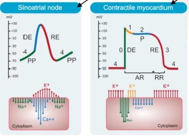
<a id="۴"></a>
⏱ 01:37 — قطعهٔ ۴ · اسلاید ۴ · 🟡
🎙 استاد گفت:
«این نمای کلی چیزی است که در ECG استاندارد میبینیم. ECG استاندارد ۱۲ لید دارد:
۶ لید اندامی به نامهای یک، دو، سه و aVR، aVL و aVF؛ و ۶ لید پرشی
که از V1 تا V6 نامگذاری میشوند. در ادامه اشاره میکنیم که این لیدهای مختلف
چگونه ثبت میشوند.»
📊 اسلاید ۵ (متن دقیق): 12 leads in surface ECG · 6 limb leads · 6 precordial
📌 برداشت — نقشهٔ ۱۲ لید:
| گروه | لیدها | صفحهٔ نگاه |
|---|---|---|
| اندامی دو-قطبی | I، II، III | فرونتال |
| اندامی تقویتشده | aVR، aVL، aVF | فرونتال |
| پرشی (سینهای) | V1 … V6 | هورایزنال (افقی) |
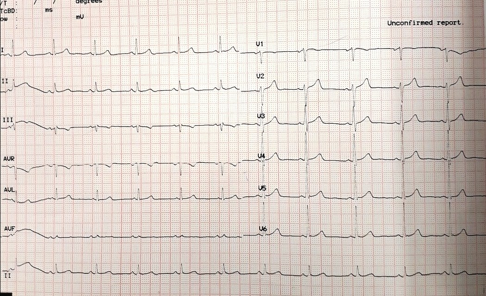
<a id="۵"></a>
⏱ 02:11 — قطعهٔ ۵ · اسلاید ۶ · 🟡
🎙 استاد گفت:
«برای تهیهٔ لیدهای اندامی به چهار الکترود احتیاج داریم که به دیستال دو اندام
فوقانی و دو اندام تحتانی وصل میشوند. اگر به هر دلیلی انتهای اندام قابل دسترس نبود
— یا بیمار نقص عضو داشت — امکان دیگری هست: میشود الکترودها را به بخش پروکسیمال
اندام یا محل اتصال اندام به تنه وصل کرد.
ترتیب رنگها: قرمز = دست راست، زرد = دست چپ، سبز = پای چپ و
مشکی = پای راست.»
📊 اسلاید ۶ (متن دقیق): Limb electrodes
| رنگ | اندام | یادسپار |
|---|---|---|
| 🔴 قرمز | دست راست | Red → Right |
| 🟡 زرد | دست چپ | Yellow → Left |
| 🟢 سبز | پای چپ | Green → پای چپ |
| ⚫ مشکی | پای راست | Black → Right leg (سیم زمین) |
💡 نکتهٔ عملی: در بیمار قطع عضو یا سرمگذاریشده، الکترود را روی استامپ پروکسیمال یا تنه میبندند؛ شکل موج کمی تغییر میکند ولی ریتم و بیشتر پارامترها خوانا میماند.
<a id="۶"></a>
⏱ 03:19 — قطعهٔ ۶ · اسلاید ۷ · 🟡
🎙 استاد گفت:
«برای لیدهای دو-قطبی، دو الکترود مثبت و منفی لازم است:
اگر منفی روی دست راست و مثبت روی دست چپ باشد، لید یک ایجاد میشود؛
اگر منفی روی دست راست و مثبت روی پای چپ، لید دو؛
و اگر منفی روی دست چپ و مثبت روی پای چپ، لید سه.»
📊 اسلاید ۷ (متن دقیق): Bipolar leads
| لید | قطب منفی | قطب مثبت | جهت نگاه |
|---|---|---|---|
| I | دست راست | دست چپ | جانبی (لاترال) |
| II | دست راست | پای چپ | تحتانی — لید پایش ریتم |
| III | دست چپ | پای چپ | تحتانی |
💡 چرا لید II برای پایش؟ تقریباً موازی محور طبیعی قلب است؛ به همین دلیل موج P در آن واضحترین شکل را دارد.
📊 اسلاید ۸ (متن دقیق): Augmented (unipolar) limb leads — aVR، aVL، aVF (تقویتشده، نسبت به یک قطب مرجع)
<a id="۷"></a>
⏱ 03:51 — قطعهٔ ۷ · اسلاید ۹ + ⏱ 04:34 — قطعهٔ ۸ · اسلاید ۹ · 🔴/🟡
🎙 استاد گفت (بازسازی از قطعهٔ ۷ و ۸):
«شش لید پرشی نداریم… الکترودها در فضای بیندندهای و در یک سطح افقی دور
قفسهٔ سینه قرار میگیرند: V1 و V2 در فضای بیندندهای چهارم، کنار جناغ راست و چپ؛
V3 بین V2 و V4؛ V4 در فضای بیندندهای پنجم در خط میانترقوهای چپ؛
V5 و V6 در همان سطح، بهطرف خط زیربغل قدامی و میانی.
در بحث ایسکمی اشاره خواهد شد که در بیمارانی که مشکوک به MI هستند — بهویژه
انفارکتوس خلفی — لازم است لیدهای دیگری هم بگیریم: V7، V8 و V9 در همان سطح
افقی، در سمت چپ و پشت مهرهها قرار میگیرند. همچنین در بیماری که
هایپرتروفی قابل ملاحظه دارد، ویژگیهای دوازده لید را میبینیم.
V1 تا V6 هم بهصورت قرینه در سمت راست قرار داده میشوند (V3R تا V6R) — این
در بعضی موقعیتها که بخواهیم سمت راست را ببینیم انجام میشود.»
📊 اسلاید ۹ (متن دقیق): Precordial leads
| لید | محل |
|---|---|
| V1 | فضای بیندندهای چهارم، کنار جناغ راست |
| V2 | فضای بیندندهای چهارم، کنار جناغ چپ |
| V3 | بین V2 و V4 |
| V4 | فضای بیندندهای پنجم، خط میانترقوهای چپ |
| V5 | همان سطح V4، خط زیربغل قدامی |
| V6 | همان سطح V4/V5، خط زیربغل میانی |
| لیدهای تکمیلی | کاربرد |
|---|---|
| V3R–V6R | نگاه به بطن راست (مثلاً MI رانتی) |
| V7–V9 | نگاه به دیوارهٔ خلفی |
💡 حیاتیترین دقت این بخش: V1 و V2 در فضای بیندندهای چهارم قرار میگیرند؛ اشتباه در این محل، الگوهای کاذب مثل «R بلند در V1» یا اختلال کاذب در پیشرفت موج R تولید میکند.
<a id="۸"></a>
⏱ 05:51 — قطعهٔ ۹ · اسلاید ۱۰ · 🟡
🎙 استاد گفت:
«لیدها دوربینهای از زوایای مختلفاند که به فعالیت الکتریکی قلب نگاه میکنند:
لیدهای اندامی در مقطع فرونتال (نما) و لیدهای پرشی در مقطع هورایزنال.»
📊 اسلاید ۱۰ (متن دقیق): Vector of each lead is depicted from negative to positive electrode
📌 برداشت: اگر یک بردار در جهت یک لید باشد، بیشترین انحراف را در آن لید میسازد و لیدهای عمود بر آن کمترین انحراف را دارند. همین موضوع، پایهٔ تعیین محور (بخش ۹) است.
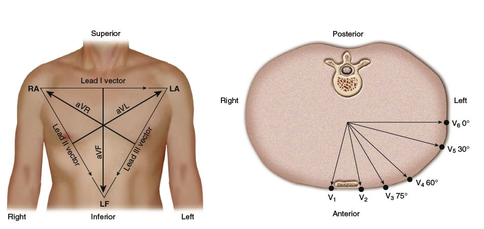
<a id="۹"></a>
⏱ 06:16 — قطعهٔ ۱۰ · اسلاید ۱۱ · 🟡
🎙 استاد گفت:
«یک موضوع بهعنوان محور (axis) مطرح است، بر اساس اینکه جهت بردار الکتریکی قلب
— و آن حداکثر مقدارش — همراستا با کدام یک از لیدها باشد.
در شکلی که ملاحظه میکنید، اگر بردار همراستا با لید یک باشد، محور صفر درجه است؛
اگر با لید دو باشد حدود ۶۰ درجه — و در جهت مخالف، منفی ۳۰ درجه؛
اگر همراستا با aVF باشد حدود ۹۰ درجه؛ و اگر برعکسش باشد، حدود ۲۱۰- درجه.
اگر همراستای aVL باشد ۱۲۰ درجه…»
📊 اسلاید ۱۱ (متن دقیق): (شکل دایرهٔ لیدها و محورها)
📌 برداشت — جدول مرجع محور:
| لید (جهت بردار) | زاویهٔ محور |
|---|---|
| I | ۰° |
| II | ۶۰° |
| aVF | ۹۰° |
| III | ۱۲۰° |
| aVL | ۳۰-° |
| aVR | ۱۵۰-° (یا ۲۱۰-) |
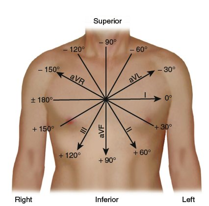
<a id="۱۰"></a>
⏱ 07:24 — قطعهٔ ۱۱ · اسلاید ۱۳ + ⏱ 07:53 — قطعهٔ ۱۲ · اسلاید ۱۳ · 🔴
🎙 استاد گفت (قطعهٔ ۱۱ و ۱۲):
«اجزایی داریم: امواج، سگمنتها و فواصل. سگمنت بخشی از خط ایزوالکتریک
(خط پایه) است که بین دو موج قرار میگیرد؛ ولی فاصله (interval) از شروع یک موج
تا شروع موج بعدی است و شامل یک موج هم میشود.
موج P مربوط به فعالیت الکتریکی و دپولاریزاسیون دهلیزها است؛ کمپلکس QRS
مربوط به دپولاریزاسیون بطنها؛ و موج T مربوط به رپولاریزاسیون بطنها.»
📊 اسلاید ۱۲ (متن دقیق): Waves, segments, intervals
📊 اسلاید ۱۳ (متن دقیق): (شکل)
📌 برداشت — این جدول را حفظ کنید:
| جزء ECG | رخداد الکتریکی |
|---|---|
| موج P | دپولاریزاسیون دهلیزها |
| کمپلکس QRS | دپولاریزاسیون بطنها |
| موج T | رپولاریزاسیون بطنها |
| فاصلهٔ PR | از شروع P تا شروع QRS (شامل تأخیر AV) |
| سگمنت ST | از پایان QRS تا شروع T |
| تفاوت | سگمنت | فاصله (interval) |
|---|---|---|
| تعریف | بین دو موج | شامل یک موج |
| مثال | ST، PR | QT، RR |
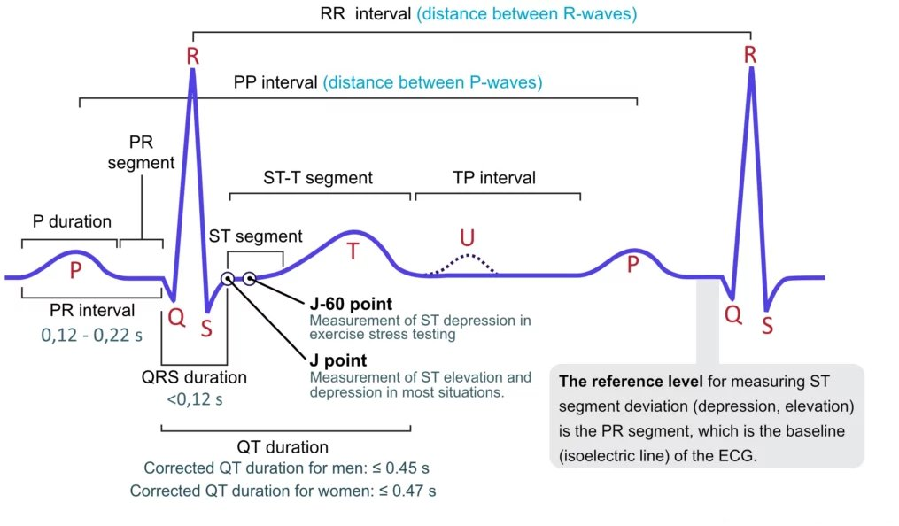
<a id="۱۱"></a>
⏱ 08:13 — قطعهٔ ۱۳ · اسلاید ۱۴ · 🟢
🎙 استاد گفت:
«کنار هر نوار، شاخصی هست که با شکل خاصی نمایش داده میشود؛ به آن scale میگوییم.
دو مؤلفهٔ مهم دارد: یکی سرعت حرکت کاغذ و دیگری ولتاژ (گین).
سرعت استاندارد ۲۵ میلیمتر بر ثانیه و گین ۱۰ میلیمتر بر میلیولت است.
اگر با گین و سرعت استاندارد ثبت شده باشد، همان نمای استاندارد را میبینیم.
اگر به هر دلیلی ولتاژ و گین کاهش پیدا کند، تمام امواج فشرده میشوند و تغییرات
خفیفتر دیده میشود؛ برعکس اگر گین افزایش پیدا کند، اندازهٔ امواج بزرگتر
دیده میشود.
در مورد سرعت هم همینطور است: اگر دستگاه با سرعت بالاتر کاغذ را حرکت دهد،
فاصلهٔ بین کمپلکسها بیشتر میشود و اگر با سرعت کمتر، فاصلهها کمتر میشود.
بهترین حالت این است که حالت غیراستاندارد را هم بدانیم — چون اگر روی نوار نوشته شده
باشد که با چه سرعت و گینی ثبت شده، قضاوت درست میکنیم. بعضی وقتها اندازهها را برحسب
خانههای کوچک میگویند؛ اگر با استاندارد مطابقت داده شود، معنا روشن است.»
📊 اسلاید ۱۴ (متن دقیق): Standard · Speed: 25 mm/sec · Gain: 10 mm/mV · Calibration
| پارامتر | مقدار استاندارد | معادل |
|---|---|---|
| سرعت کاغذ | ۲۵ mm/s | هر خانهٔ کوچک = ۰٫۰۴ ثانیه · هر خانهٔ بزرگ = ۰٫۲ ثانیه |
| گین | ۱۰ mm/mV | ۱ mV = ۱۰ mm = ۲ خانهٔ بزرگ |
| کالیبراسیون | پالس ۱ mV | باید ابتدای نوار دیده شود (دو خانهٔ بزرگ) |
📌 اثر تغییر گین و سرعت روی شکل موج:
| اتفاق | روی ارتفاع | روی عرض / فاصلهها |
|---|---|---|
| گین ↓ | امواج کوتاهتر | بیتأثیر |
| گین ↑ | امواج بلندتر | بیتأثیر |
| سرعت ↑ | بیتأثیر | فاصلهٔ کمپلکسها بیشتر |
| سرعت ↓ | بیتأثیر | فاصلهها کمتر |
💡 هشدار بالینی: «گین پایین» میتواند آمپلیتودِ واقعاً کوچک (مثل ولتاژ پایین در افیوژن پریکارد) را پنهان کند یا برعکس، هایپرتروفی کاذب بسازد. همیشه اول سرعت، گین و کالیبراسیون را چک کنید.
<a id="۱۲"></a>
⏱ 11:08 — قطعهٔ ۱۴ · اسلاید ۱۵ · 🟢
🎙 استاد گفت:
«پس از اینکه به ضربان رسیدیم، سراغ ریتم بیمار میرویم. برای تشخیص ریتم، اولین
کار این است که ببینیم منشأ P از گرهٔ سینوسی (SA node) هست یا نه.
اگر P از SA باشد، ریتم سینوسی است. ویژگیاش این است که در لید دو مثبت و
در aVR منفی است. در ریتم سینوسی باید برای هر QRS یک کمپلکس P وجود داشته باشد
و ارتباط P با QRS برقرار باشد.
در مواقعی که QRS فرم دیگری دارد و ارتباط بین P و QRS برقرار نیست، ریتم سینوسی
نیست؛ ریتم دیگری است که در بحث آریتمیها با جزئیات بیشتر توضیح داده خواهد شد.»
📊 اسلاید ۱۵ (متن دقیق): Sinus · … · Rhythm
📌 معیارهای چهارگانهٔ ریتم سینوسی:
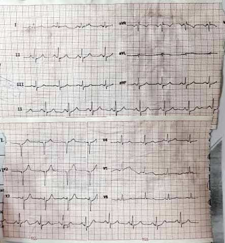
<a id="۱۳"></a>
⏱ 12:22 — قطعهٔ ۱۵ · اسلاید ۱۶ + ⏱ 14:25 — قطعهٔ ۱۶ · اسلاید ۱۷ · 🟢
🎙 استاد گفت:
«اول نگاه میکنیم ببینیم ریتم منظم است یا نامنظم.
اگر منظم باشد و فاصلهٔ کمپلکسها ثابت باشد، تعداد خانههای بزرگ بین دو
کمپلکس را میشماریم و ۳۰۰ را تقسیم بر آن عدد میکنیم؛ مثلاً اگر فاصله **چهار
خانهٔ بزرگ باشد، به عدد ۷۵** میرسیم.
اگر ضربان خیلی بالا باشد — یعنی فاصلهٔ کمپلکسها خیلی کم باشد — **تعداد
خانههای کوچک را میشماریم و ۱۵۰۰ را تقسیم بر آن** میکنیم؛ دقیقتر هم هست.
اگر نامنظم باشد، باید **تعداد کمپلکسهای QRS در یک بازهٔ طولانیتر — مثلاً
۶ ثانیه — را بشماریم و در ۱۰ ضرب کنیم؛ یا در ۱۰ ثانیه بشماریم و در ۶** ضرب کنیم.»
🎙 استاد گفت (مثال بیمار — قطعهٔ ۱۶):
«این نمونهٔ یک بیمار است. فواصل QRS منظم است، پس از فرمول **۱۵۰۰ تقسیم بر تعداد
خانهٔ کوچک استفاده میکنیم: ۱۵۰۰ ÷ تعداد خانهٔ کوچک ≈ ۶۶** — یعنی ضربان بیمار حدود
۶۶ است. اگر دقت کنید، بالا و گوشهٔ سمت چپ صفحه هم نوشته شده: gain ۱۰ و
rate ۲۵ میلیمتر بر ثانیه — یعنی با استاندارد ثبت شده است.
اگر بخواهیم از فرمول ۳۰۰ استفاده کنیم: اگر فاصله ۲ خانهٔ بزرگ باشد،
۳۰۰ ÷ ۲؛ کمتر از این فاصله، یعنی ضربان بالاتر.»
📊 اسلاید ۱۶ (متن دقیق): If regular: 300 divided in large squares · 1500 divided in small squares · If irregular: Number of QRS in 6 seconds × 10
| وضعیت | فرمول |
|---|---|
| منظم | ۳۰۰ ÷ تعداد خانهٔ بزرگ |
| منظم، ضربان بالا | ۱۵۰۰ ÷ تعداد خانهٔ کوچک |
| نامنظم | تعداد QRS در ۶ ثانیه × ۱۰ (یا شمارش در ۱۰ ثانیه ÷ ۶) |
جدول حفظکردنی (۵ خانهٔ بزرگ تا ۱ خانهٔ بزرگ):
| فاصلهٔ دو R | ۵ خانهٔ بزرگ | ۴ | ۳ | ۲ | ۱ |
|---|---|---|---|---|---|
| ضربان | ۶۰ | ۷۵ | ۱۰۰ | ۱۵۰ | ۳۰۰ |
💡 ترفند: دنبالهٔ ۳۰۰ – ۱۵۰ – ۱۰۰ – ۷۵ – ۶۰ – ۵۰ را حفظ کنید؛ در تمام نوارها کارتان را راه میاندازد.
💡 در ضربان نامنظم روش ۳۰۰ خطای زیادی میدهد؛ همیشه روش ۶ ثانیهای را بهکار ببرید.
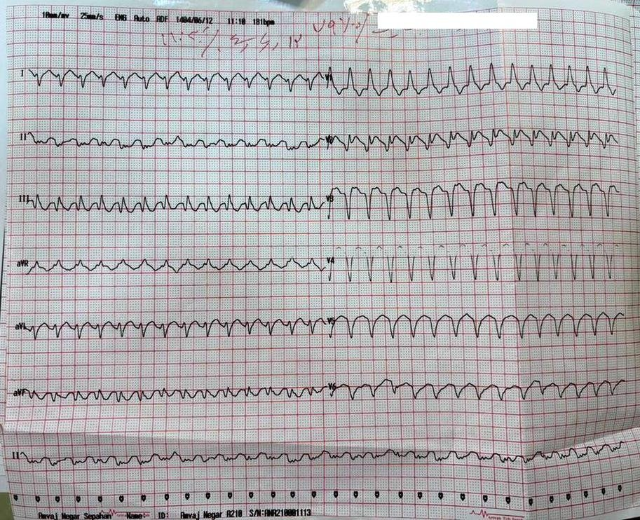
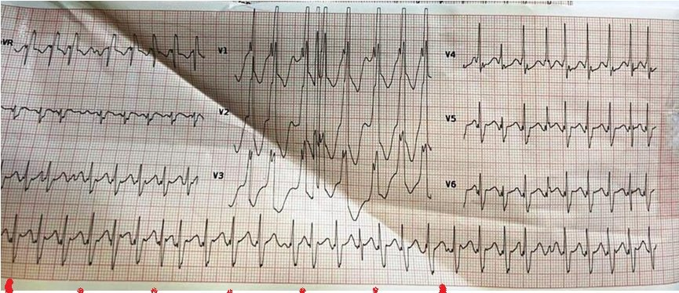
<a id="۱۴"></a>
⏱ 15:43 — قطعهٔ ۱۷ · اسلاید ۱۹ · 🟡
🎙 استاد گفت:
«اگر ضربان بیمار زیر ۶۰ باشد، برادیکاردی گفته میشود — در بعضی منابع زیر ۵۰.
همانطور که ملاحظه میکنید، این بیمار فاصلهٔ کمپلکسها را بلند دارد؛ مثل ضربان
۴۰ تا ۴۵ که برادیکاردی محسوب میشود.»
📊 اسلاید ۱۹ (متن دقیق): Bradycardia (HR<60)
HR < 60 → برادیکاردی
HR < 50 → برادیکاردی آشکار (بعضی منابع)💡 علتهای شایع: داروها (بتا-بلاکر، دیگوکسین، بلوککنندههای کانال کلسیم)، اختلال عملکرد گرهٔ سینوسی، بلوک AV درجات بالا، هیپوتیروئیدی، هیپرکالمی. علامتدار بودن (سنکوپ، سرگیجه) تعیینکنندهٔ درمان است.
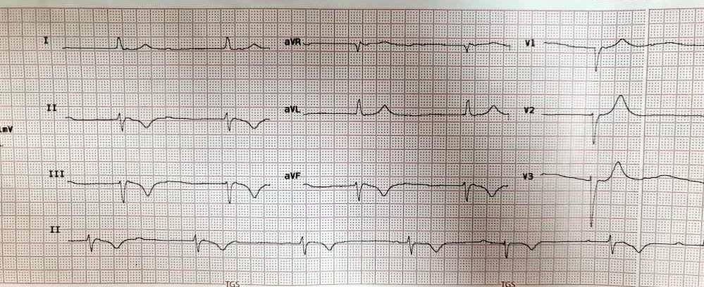
<a id="۱۵"></a>
⏱ 16:12 — قطعهٔ ۱۸ · اسلاید ۲۰ · 🟢
🎙 استاد گفت:
«اگر ضربان بیمار بالای ۱۰۰ باشد، تاکیکاردی میگویند — مثل بیماری که ملاحظه
میکنید. همانطور که میبینید، فواصل QRS متغیر است؛ اینجا باید تعداد کمپلکسهای QRS
را در ۶ ثانیه بشماریم و در ۱۰ ضرب کنیم تا ضربان تقریبی به دست بیاید.
در این بیمار ضربان حدود ۱۳۰ تا ۱۴۰ است و تاکیکاردی محسوب میشود.»
📊 اسلاید ۲۰ (متن دقیق): Tachycardia (HR>100)
| نوع | تعریف |
|---|---|
| سینوسی | تاکیکاردی با P واضح و شروع/پایان تدریجی |
| سوپراونژنتریکولار (SVT) | باریککمپلکس، شروع و پایان ناگهانی |
| بطن (VT) | پهنکمپلکس — اورژانس |
💡 قاعدهٔ طلایی: تاکیکاردی + پهنکمپلکس = VT تا خلافش ثابت شود.
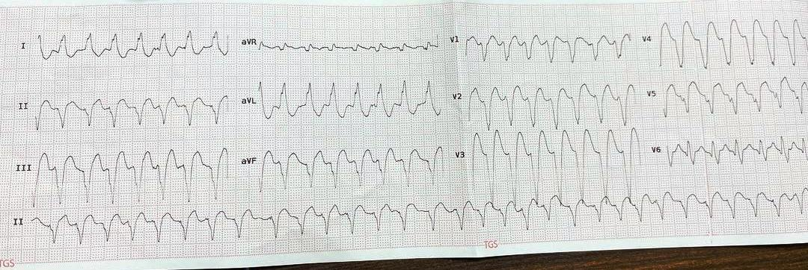
<a id="۱۶"></a>
⏱ 17:01 — قطعهٔ ۱۹ · اسلاید ۲۱ + ⏱ 18:57 — قطعهٔ ۲۰ · اسلاید ۲۱ · 🟡/🟢
🎙 استاد گفت (قطعهٔ ۱۹):
«محور بر اساس اینکه جهت بردار الکتریکی و حداکثر ولتاژ آن همراستا با کدام لید باشد،
اندازهگیری میشود. وقتی در مورد محور کمپلکس QRS صحبت میکنیم، منظورمان همین است.
راه سادهتر و تقریبی: ابتدا لید یک و دو را نگاه میکنیم؛
اگر هر دو مثبت باشند، محور طبیعی است.
اگر لید یک منفی و لید دو مثبت باشد، انحراف محور به راست داریم.
اگر لید یک مثبت ولی لید دو منفی باشد، باید aVF را هم توجه کنیم.»
🎙 استاد گفت (قطعهٔ ۲۰):
«…حالا به مواردی میرسیم که لید یک ما مثبت است ولی aVF منفی؛ در این مواقع باید
لید دو را هم چک کنیم. اگر لید دو مثبت باشد، محور بین صفر تا منفی ۳۰ درجه
است — ولی این هم جزو رنج نرمال محسوب میشود.»
📊 اسلاید ۲۱ (متن دقیق): Axis
📌 الگوریتم ۳ مرحلهای محور:
| گام | مشاهده | نتیجه |
|---|---|---|
| ۱ | لید I + و aVF + | محور نرمال (۰ تا ۹۰) |
| ۲ | لید I − و aVF + | انحراف به راست (RAD) |
| ۳ | لید I + و aVF − | aVF منفی؟ → لید II را ببینید: <br>• II مثبت → ۰ تا ۳۰-، نرمال <br>• II منفی → انحراف به چپ (LAD) |
💡 نکتهٔ استاد: بازهٔ ۰ تا ۳۰- درجه (ناحیهٔ صورتی در اسلاید) هم نرمال شمرده میشود؛ فقط پایینتر از ۳۰- بهعنوان LAD محسوب میشود.
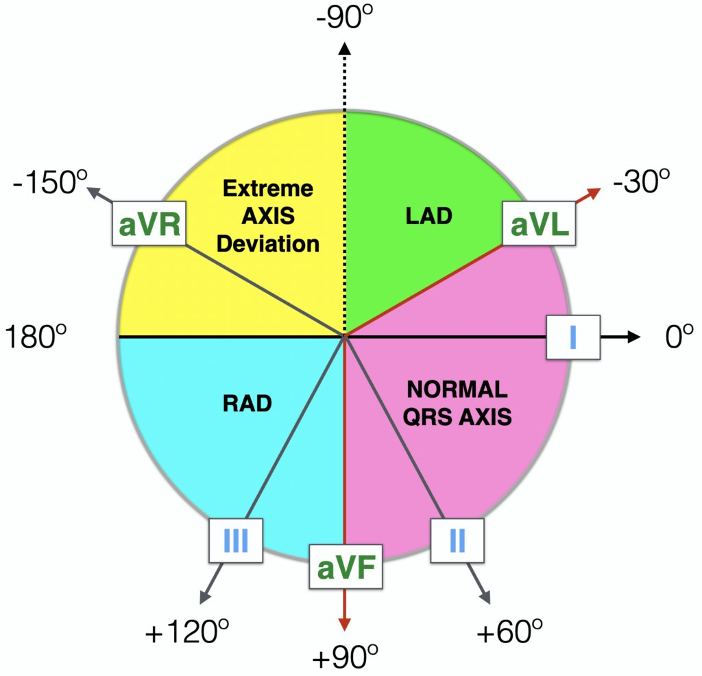
<a id="۱۷"></a>
⏱ 19:29 — قطعهٔ ۲۱ · اسلاید ۲۲ · 🟡
🎙 استاد گفت: (صدای این قطعه برای مدل ناخوانا بود؛ فقط خط کلی مطلب قابل تشخیص است)
«لیدها بر اساس موقعیت و زاویهای که از آن به قلب نگاه میکنند، به گروههایی تقسیم
میشوند؛ هر گروه بخشی از قلب را میبیند…»
📊 اسلاید ۲۲ (متن دقیق): Contagious leads (شکل)
| ناحیهٔ قلب | لیدهای همجوار |
|---|---|
| سپتال | V1، V2 |
| قدامی (Anterior) | V3، V4 |
| جانبی (Lateral) | I، aVL، V5، V6 |
| تحتانی (Inferior) | II، III، aVF |
💡 قاعدهٔ بالینی طلایی: تغییر ST تنها وقتی معنادار است که در دو لید همجوار
دیده شود. مثلاً ST elevation در V2 و V3 = انفارکتوس قدامی-سپتال.
به همین دلیل است که وقتی یک لید تنها مشکوک است، باید لیدهای مجاورش را هم ببینیم؛
این کار «تأییدِ دو-لیدی» نام دارد و پایهٔ موضعیابی ایسکمی و انفارکتوس است.
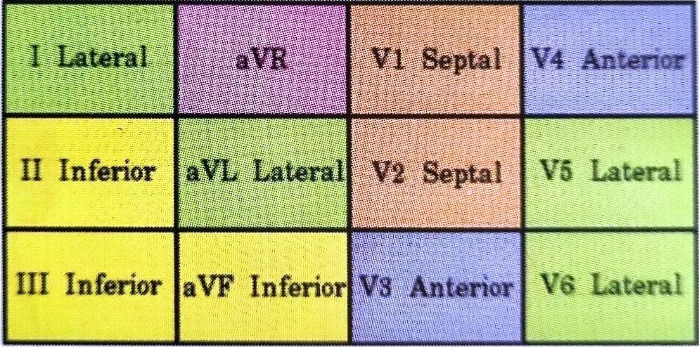
<a id="۱۸"></a>
⏱ 20:28 — قطعهٔ ۲۲ · اسلاید ۲۴ + ⏱ 21:24 — قطعهٔ ۲۳ · اسلاید ۲۶ · 🟢
🎙 استاد گفت (قطعهٔ ۲۲):
«موج P حاصل فعالیت الکتریکی دهلیزها است و این فعالیت از گرهٔ سینوسی شروع
میشود که در موقعیت بالایی-خلفی دهلیز راست قرار دارد؛ جهت دپلاریزاسیون از
راست به چپ و بالا به پایین است. حاصلش همان موج P است که در لید دو مثبت
میبینیم و در aVR منفی است. در V1 بهصورت دو-فازی (مثبت-منفی) دیده میشود.»
🎙 استاد گفت (قطعهٔ ۲۳):
«حداکثر ارتفاع موج P در لید دو حدود ۲٫۵ میلیمتر و حداکثر عرض آن **۳
میلیمتر است. جایی که مشکوک باشیم آیا واقعاً ریتم سینوسی** است و موج P داریم یا نه،
در V1 توجه میکنیم: همانطور که گفتیم، در لید دو موج P مثبت و در V1 بهصورت
دو-فازی دیده میشود.»
📊 اسلاید ۲۶ (متن دقیق): Atrial depolarization · Up to 3 mm width · Up to 2.5 mm height · Leads II & V1 · If sinus: Positive in II · Biphasic (+/−) in V1
| پارامتر موج P | نرمال |
|---|---|
| عرض | ≤ ۳ mm (≈ ۰٫۱۲ ثانیه = ۳ خانهٔ کوچک) |
| ارتفاع | ≤ ۲٫۵ mm (≈ ۰٫۲۵ mV) |
| شکل | مثبت در II — دو-فازی در V1 |
| محور P | ۰ تا ۷۵ درجه |
📊 اسلاید ۲۴–۲۵ (متن دقیق): (شکلهای گرهٔ سینوسی و مسیر انتشار دهلیزی)
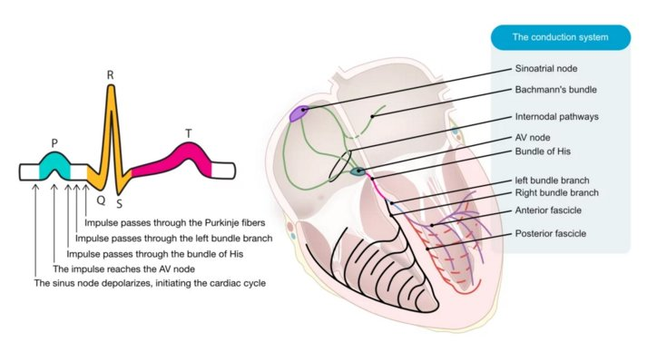
<a id="۱۹"></a>
⏱ 22:11 — قطعهٔ ۲۴ · اسلاید ۲۷ · 🟢
🎙 استاد گفت:
«موج P را دو نیمه در نظر میگیریم: نیمهٔ اول حاصل دپلاریزاسیون دهلیز راست و
نیمهٔ دوم حاصل دهلیز چپ است. دربارهٔ اندازهٔ نرمال از نظر ارتفاع و عرض
صحبت کردیم.
اگر بیمار بزرگی دهلیز راست داشته باشد، ولتاژ موج P در لید دو افزایش پیدا میکند و
در V1 هم قسمت مثبت موج P بارزتر میشود.
اگر بزرگی دهلیز چپ داشته باشیم، موج P پهن میشود و ممکن است دندانهدار
(نوچدار) شود؛ در لید یک و V1 قسمت منفی موج P واضحتر و بارزتر میشود.»
📊 اسلاید ۲۷ (متن دقیق): (شکلهای P pulmonale و P mitrale)
| بزرگی دهلیز راست (P pulmonale) | بزرگی دهلیز چپ (P mitrale) | |
|---|---|---|
| عرض | طبیعی | پهن (> ۰٫۱۲ s) |
| ارتفاع | بلند (> ۲٫۵ mm در II) | طبیعی |
| نما | P نوکتیز، V1 قسمت مثبت بارز | P دندانهدار/دوکوهانه، V1 قسمت منفی بارز |
| مثال بالینی | COPD، هیپرتنشن ریوی، آمبولی | تنگی/نارسایی میترال، LVH |
<a id="۲۰"></a>
⏱ 23:45 — قطعهٔ ۲۵ · اسلاید ۲۹ · 🟡
🎙 استاد گفت:
«موضوع بعدی موج P و فاصلهٔ PR است: به فاصلهٔ بین شروع موج P و شروع **کمپلکس
QRS گفته میشود و بیانگر تأخیر در هدایت** بین دهلیز و بطن (گرهٔ AV) است.
این فاصله بهصورت نرمال بین ۳ تا ۵ خانهٔ کوچک است — یعنی حدود ۰٫۱۲ تا ۰٫۲ ثانیه
یا ۱۲۰ تا ۲۰۰ میلیثانیه.»
📊 اسلاید ۲۹ (متن دقیق): Related to delay in AV nodal conduction · 0.12–0.2 s · PR interval
| فاصلهٔ PR | معنا |
|---|---|
| ۰٫۱۲ – ۰٫۲ ثانیه (۳–۵ خانهٔ کوچک) | نرمال |
| > ۰٫۲ ثانیه | بلوک AV درجهٔ یک |
| کوتاه (< ۰٫۱۲) + موج دلتا | سندرم WPW |
| متغیر و کوتاهشونده | بلوک AV درجهٔ دو (Wenckebach) |
| بدون ارتباط P و QRS | بلوک AV درجهٔ سه (کامل) |
💡 برای بلوک درجهٔ دو (نوع ۱ / Mobitz I): فاصلهٔ PR بهتدریج بلند میشود تا یک QRS در بیفتد؛ در Mobitz II، PR ثابت است و یکبهیک بدون هشدار QRS میافتد (پرگنوز بدتر، نیاز به ضربانساز).
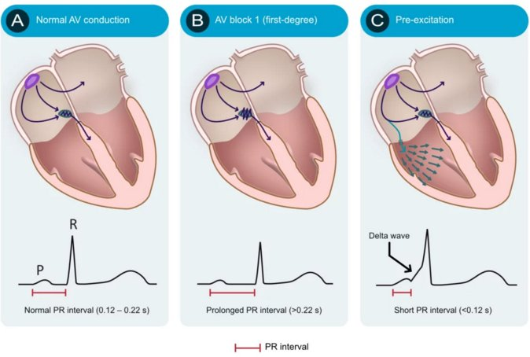
<a id="۲۱"></a>
⏱ 24:19 — قطعهٔ ۲۶ · اسلاید ۳۰ · 🟢
🎙 استاد گفت:
«افزایش PR (بلوک درجهٔ یک) تعریفش بالای ۰٫۲ ثانیه است؛ یعنی بیشتر از چهارصد…
موج کوتاه شدن PR اما مهمترین تشخیصی است که دارد: **وجود یک مسیر فرعی
(accessory pathway) که باعث میشود قسمتی از بطن زودتر از موعد دپولاریزه شود**؛
در نتیجه موج دلتا، QRS پهن و کوتاه شدن فاصلهٔ PR را میبینیم.»
📊 اسلاید ۳۰ (متن دقیق): (شکل مسیر فرعی و موج دلتا)
📌 سهگانهٔ WPW:
| یافته | توضیح |
|---|---|
| ۱. PR کوتاه | < ۰٫۱۲ ثانیه |
| ۲. موج دلتا (δ) | شروع کمپلکس پهن و لغزنده — بخش زودرَس بطن |
| ۳. QRS پهن | بهدلیل دپلاریزاسیون زودرس از مسیر فرعی |
💡 اگر PR کوتاه دیدید، سه چیز را بگردید: موج دلتا، QRS پهن، تغییرات ثانویهٔ ST/T.
⚠️ در WPW، آریتمیها (بهویژه AF با پاسخ سریع) خطرناکاند؛ دیگوکسین ممنوع است.
📊 اسلاید ۲۸ (متن دقیق): (شکلهای مربوط به PR و مسیر هدایت)
<a id="۲۲"></a>
⏱ 25:04 — قطعهٔ ۲۷ · اسلاید ۳۱ · 🟡
🎙 استاد گفت:
«دپلاریزاسیون بطنها در دو مرحله انجام میشود: ابتدا سپتوم بینبطنی که از
چپ به راست و بهسمت جلو (آنتریور) دپلاریزه میشود — بخشی که از الکترودها
دور میشود و بهصورت انحراف کوچک منفی (q) ثبت میگردد؛ سپس همزمان بطن
راست و چپ بهسمت چپ و خلف دپولاریزه میشوند.
انتشار دپلاریزاسیون از طریق باندل به شاخههای راست و چپ میرسد.»
📊 اسلاید ۳۱ (متن دقیق): Ventricular depolarization sequence · 1. interventricular septum (from left to right and anterior) · 2. simultaneous right and left ventricles (toward left and posterior)
📌 ترجمهٔ این توالی به شکل QRS:
| مرحله | آنچه روی نوار میبینیم |
|---|---|
| ۱. سپتوم (چپ→راست، بهسوی جلو) | q کوچک در لیدهای جانبی (I، aVL، V5، V6) |
| ۲. بطنها همزمان (بهسوی چپ و خلف) | R بلند در V5–V6، S عمیق در V1–V2 |
| ۳. رپولاریزاسیون | موج T |
💡 همین ترتیب توضیح میدهد چرا در V1 طبیعی «rS» (r کوچک، S عمیق) و در V6 «qR» داریم.
<a id="۲۳"></a>
⏱ 25:43 — قطعهٔ ۲۸ · اسلاید ۳۲ · 🟡
🎙 استاد گفت:
«در این شکل، نامگذاری انواع فرمهایی که کمپلکس QRS میتواند داشته باشد را
ملاحظه میکنید. اگر سه جزء داشته باشیم: اولین قسمت منفی، بعد اولین قسمت مثبت
و بعد قسمت منفی بعدی:
اولین انحراف منفی را Q میگوییم، اولین انحراف مثبت را R و
انحراف منفی پس از R را S.
اگر کمپلکس با انحراف مثبت شروع شود و موج Q نداشته باشد، فقط موج R است؛
و اگر بعد از آن یک انحراف منفی بیاید، S نامگذاری میشود.
نکتهٔ مهم این است که امواج بزرگ را با حروف درشت (R، Q، S) و **امواج کوچک را با
حروف ریز** (r، q، s) نامگذاری میکنند.»
📊 اسلاید ۳۲ (متن دقیق): (شکل انواع کمپلکس: qR، rS، RS، QR، rSr′ …)
📌 قانون ساده:
انحراف منفی قبل از R → Q (اگر ≥ یک خانهٔ کوچک عمق: q)
اولین انحراف مثبت → R
انحراف منفی بعد از R → S
موج مثبت دوم → R′ (R-prime)| نام | توضیح | مثال بالینی |
|---|---|---|
| qR | انحراف منفی کوچک + R بلند | طبیعی در V5–V6 |
| rS | r کوچک + S عمیق | طبیعی در V1–V2 |
| QS | فقط منفی عمیق | انفارکتوس/فیبروز |
| rSr′ | دو موج مثبت | RBBB |
| qRS | q کوچک + R بلند + S | طبیعی یا LVH |
💡 حرف بزرگ/کوچک معیار عمق و اهمیت است: Q بزرگ و پهن = پاتولوژیک؛ q کوچک و باریک = طبیعی.
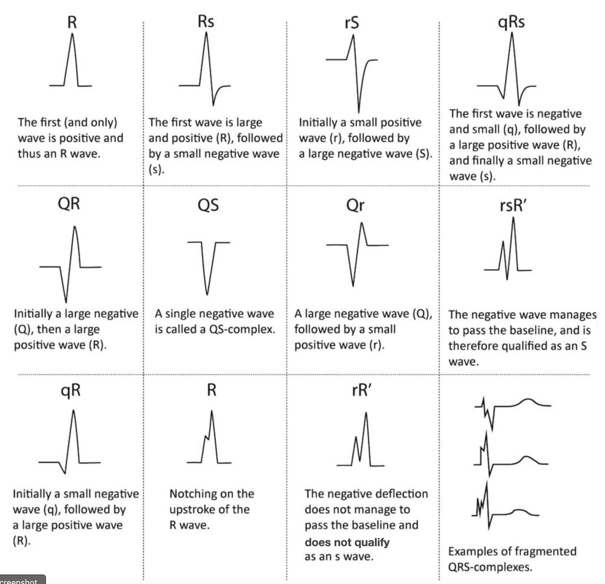
<a id="۲۴"></a>
⏱ 27:32 — قطعهٔ ۲۹ · اسلاید ۳۳ · 🟡
🎙 استاد گفت:
«در تفسیر کمپلکس QRS است که باید به این موارد توجه شود — همینها شامل این موارد
است: محور (Axis)، پیشرفت موج R (R progression)، وجود موج Q پاتولوژیک،
وجود موج دلتا، پهنای کمپلکس QRS و ارتفاع (آمپلیتود) کمپلکس.
به همهٔ اینها باید توجه شود؛ چون هر کدام نشاندهندهٔ یک بیماری خاص است.»
📊 اسلاید ۳۳ (متن دقیق): Axis · R progression · Presence of pathologic q wave · Presence of delta wave · QRS width · QRS amplitude
| # | پارامتر | نشانهٔ چه بیماری؟ |
|---|---|---|
| ۱ | محور (Axis) | جابهجایی محور → RVH، LBBB، انفارکتوس، اختلال هدایت |
| ۲ | پیشرفت موج R | تغییر ناحیهٔ گذر → انفارکتوس، RVH، بیماری ریوی |
| ۳ | موج q پاتولوژیک | انفارکتوس قدیمی / فیبروز (پهن > ۰٫۰۴ s یا عمق > ۲۵٪ R) |
| ۴ | موج دلتا | WPW (مسیر فرعی) |
| ۵ | پهنای QRS | بلوک شاخهای، فاسیکولار، هایپرکالمی، داروها |
| ۶ | ارتفاع/آمپلیتود | هایپرتروفی (LVH/RVH) یا ولتاژ پایین (افیوژن، BMI بالا) |
💡 این جدول، چکلیست نگاه اول به کمپلکس QRS است: از محور شروع کنید و به ارتفاع تمام کنید.
<a id="۲۵"></a>
⏱ 28:02 — قطعهٔ ۳۰ · اسلاید ۳۴ · 🟡
🎙 استاد گفت:
«در مورد ارزیابی محور صحبت کردیم؛ گفتیم بیشتر در مورد کمپلکس QRS گفته میشود.
محور نرمال چیزی بین منفی ۳۰ تا ۹۰ درجه است. ناحیهای که با رنگ صورتی
نمایش داده شده، ناحیهای است که موج… در لید یک مثبت است و همچنان لید دو مثبت
است — این مورد خاص، بازهٔ بین صفر تا منفی ۳۰ درجه است و طبیعی محسوب میشود.
انحراف محور به چپ زمانی است که موج QRS در لید یک مثبت و در **لیدهای دو و aVF
منفی باشد؛ انحراف به راست زمانی است که لید یک منفی باشد و بیشترین برآیند
بردار QRS همراستای aVF** باشد.»
📊 اسلاید ۳۴ (متن دقیق): (شکل دایرهٔ محور با نواحی رنگی)
📌 جدول محور (کامل):
| زاویهٔ محور | نام | لید I | لید II | لید aVF |
|---|---|---|---|---|
| ۳۰- تا ۹۰+ | نرمال | + | + | + |
| ۰ تا ۳۰- (صورتی) | نرمال (فیزیولوژیک) | + | + | − |
| ۳۰- تا ۹۰- | LAD | + | − | − |
| ۹۰ تا ۱۸۰ | RAD | − | ± | + |
| ۱۸۰ تا ۹۰- (extreme) | محور نامعین | − | − | − |
💡 خلاصهٔ استاد: برای LAD → «لید I مثبت، لیدهای II و aVF منفی»؛ برای RAD → «لید I منفی و بیشترین برآیند در راستای aVF».
<a id="۲۶"></a>
⏱ 30:06 — قطعهٔ ۳۱ · اسلاید ۳۶ · 🟡
🎙 استاد گفت:
«گفتیم کمپلکس QRS در لیدهای مختلف شکلهای متفاوتی دارد و هر کدام بخشی از میوکارد
را نشان میدهد. توجه کنید که بطن چپ بزرگتر است.
همانطور که گفتیم، دپلاریزاسیون سپتوم ابتدا از چپ به راست است و بطنها QRS
را به سمت خود میکشند؛ حاصل این میشود که در V1 یک r کوچک با S عمیق داریم و
بهتدریج از V1 به سمت V6، ارتفاع R بیشتر و S کمتر میشود؛ در نقطهای **R و S
برابر میشوند — معمولاً V3 یا V4 — که به آن ناحیهٔ گذر (transition zone)**
میگویند.
اگر این تأخیر بیفتد یا برعکس زودتر اتفاق بیفتد، یعنی برابری R و S جابهجا شود،
میتواند نشانهٔ بیماری باشد — مثل هایپرتروفی بطن راست، انفارکتوس یا
نارسایی قلبی و…»
📊 اسلاید ۳۶ (متن دقیق): R wave progression
📊 اسلاید ۳۵ (متن دقیق): FIGURE 14.17 — Right ventricular hypertrophy pattern most consistent with severe pressure overload of the right ventricle: (1) a tall R wave in V1 (as part of the qR complex), (2) right axis deviation, (3) ST-segment depression and T wave inversion…
📌 پیشرفت طبیعی موج R:
| لید | نمای طبیعی |
|---|---|
| V1 | r کوچک، S عمیق (rS) |
| V2–V3 | R بزرگتر میشود |
| V3 یا V4 | ناحیهٔ گذر: R ≈ S |
| V5–V6 | R بلند، S کوچک (qR) |
| انحراف از الگو | نشانهٔ |
|---|---|
| گذر به راست (R در V1 بلند) | RVH، انفارکتوس خلفی، RBBB، WPW |
| گذر به چپ / تأخیر پیشرفت R | انفارکتوس قدامی، COPD، LBBB |
| R در V1 بلند (qR) + RAD + ST/T تغییر | الگوی RVH فشار-اضافهٔ شدید بطن راست (اسلاید ۳۵) |
💡 جمعبندی استاد در پایان بخش روایت: کمپلکس QRS را همیشه با شش پارامتر (بخش ۲۴) بخوانید و در کنارش پیشرفت موج R را در لیدهای پرشی دنبال کنید؛ تغییر همین دو محور، بیشترِ تشخیصهای مهم را به شما نشان میدهد.
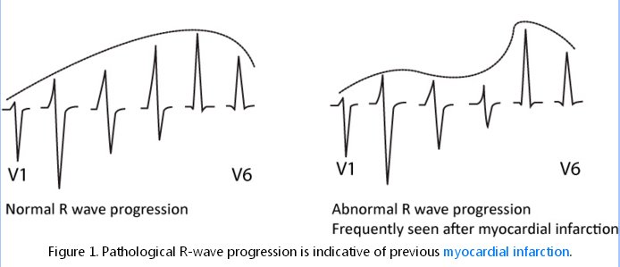
<a id="الف"></a>
⚠️ توجه: صدای استاد تا اسلاید ۳۶ موجود است (۳۱ قطعه، ۳۲:۰۷). اسلایدهای ۳۷ تا ۶۶
روایت صوتی ندارند؛ آنچه در ادامه میآید متن دقیق خود اسلایدها است (از XML فایل pptx)
— نه سخن استاد. بیشتر این اسلایدها تصویر نوار قلب هستند و متن همراهشان کم است.
تصاویر این اسلایدها در پیوست الف-۲ آمده است.
| اسلاید | عنوان / متن دقیق اسلاید |
|---|---|
| ۳۷ | Q waves · Physiologic q in V6 due to septum depolarization · Normal q wave in III · Also in I, II, aVL, V5, V6 with maximal 0.04 s width and 0.25 R height |
| ۳۹ | Differential Diagnosis of Non-infarction Q Waves |
| ۴۰ | QRS voltage — Low voltage: < 5 mm in all limb leads or < 10 mm in all precordial leads · Increased voltage in LVH: S in V1 + R in V5 or V6 > 35 mm · R in V5 or V6 > 25 mm · Sum of QRSs in all leads > 175 mm |
| ۴۵ | QRS width · Major causes of wide QRS |
| ۴۶ | fascicular blocks |
| ۴۸ | Common Diagnostic Criteria for Bundle Branch Blocks |
| ۴۹ | Fragmented QRS: more sensitive than Q waves (86% vs 36%) and less specific for MI (89% vs 99%) |
| ۵۰ | Plateu phase of ventricular action potential · From J point to beginning of T wave · ST segment |
| ۵۴ | ST-depressions caused by acute ischemia |
| ۶۰ | T wave — ventricular repolarization · Slower than depolarization · Directed from epicardium to endocardium · Positive in most leads · Negative in aVR · Sometimes isolated inverted in III or aVL, or flat in aVF, or flat/negative in V1 |
| ۶۱ | U wave — After T wave, most common in V2–V4 · ¼ of T wave amplitude · More prominent with some anti-arrhythmics or hypokalemia · Increases the probability of VT |
| ۶۲ | QT interval |
| ۶۴ | ECG in metabolic disorders |
| ۶۵ | Hyperkalemia |
| ۶۶ | THANKS FOR YOUR ATTENTION |
این تصاویر از خود فایل pptx استخراج شدهاند و متن گفتاری همراهی ندارند؛ برای کاملبودن جزوه ضمیمه شدهاند.
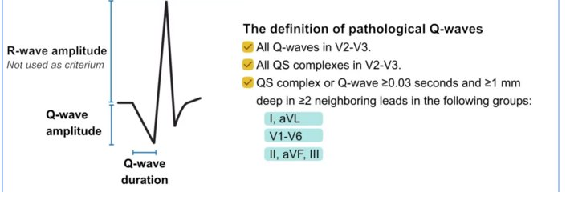
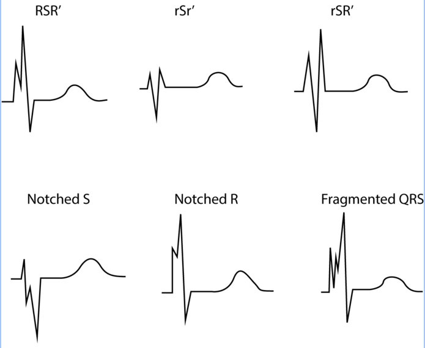
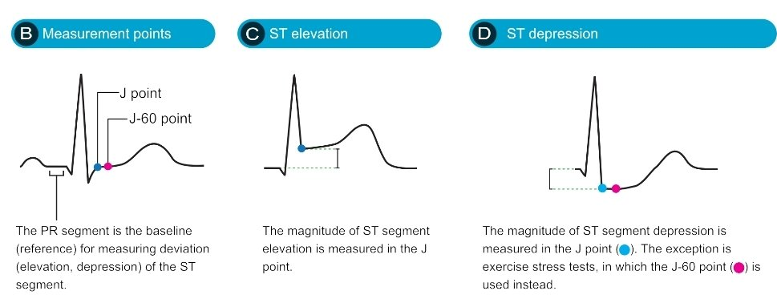
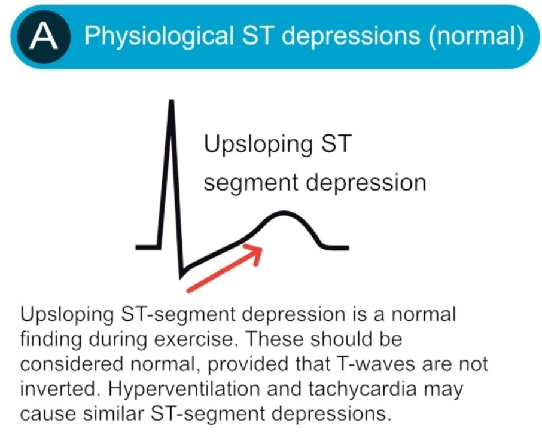
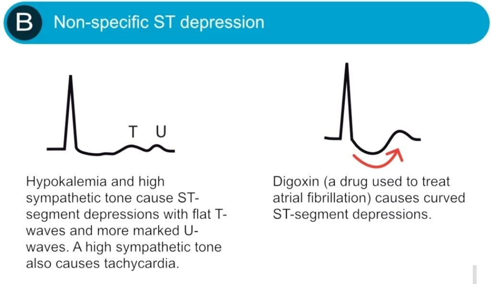
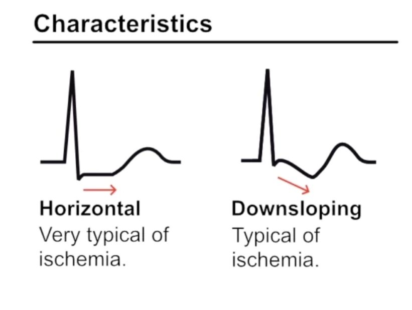
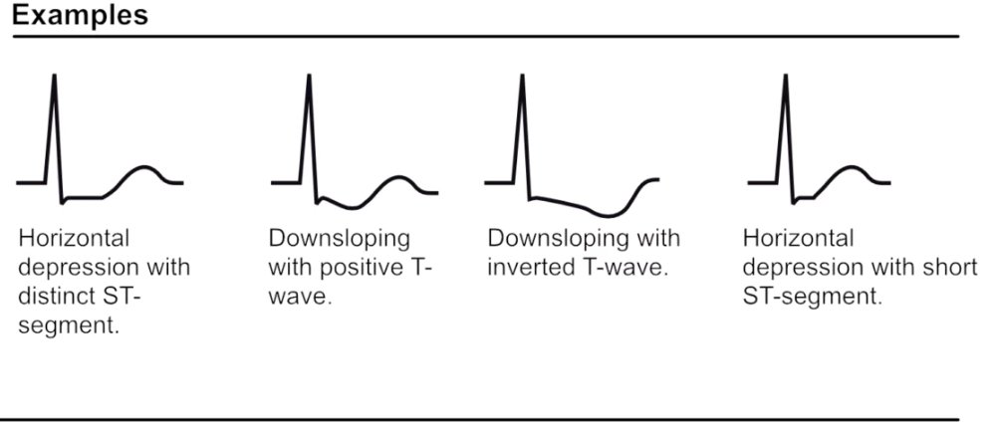
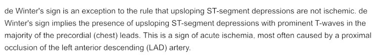
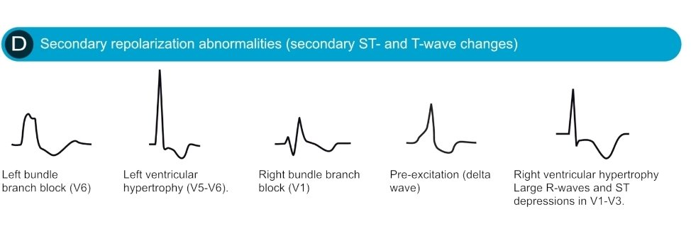
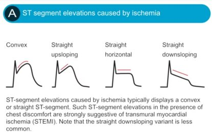
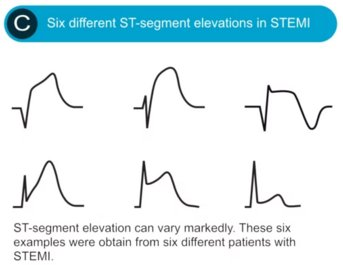
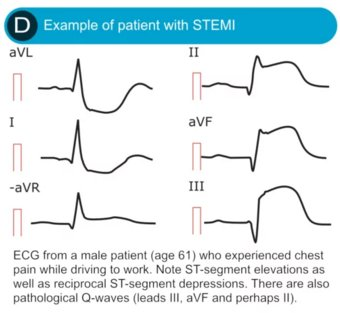
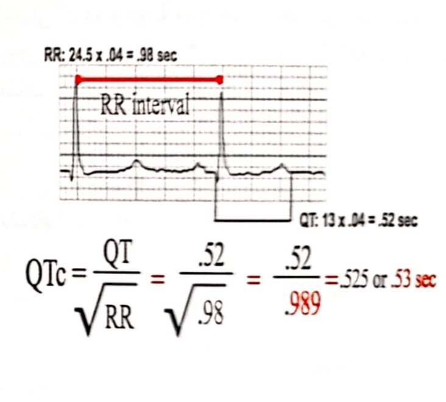
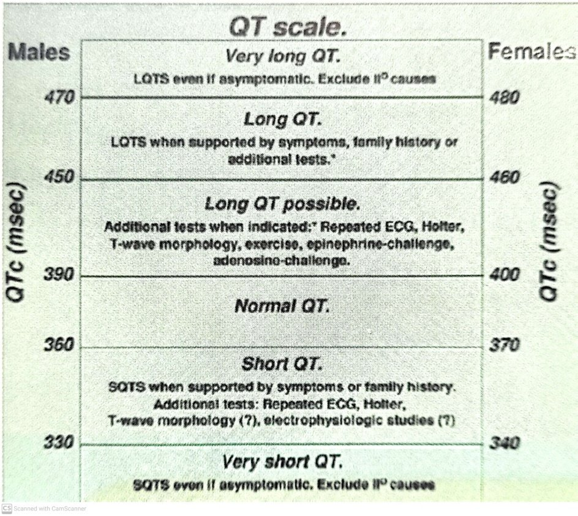
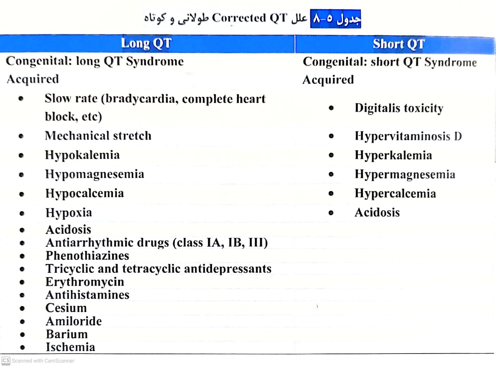
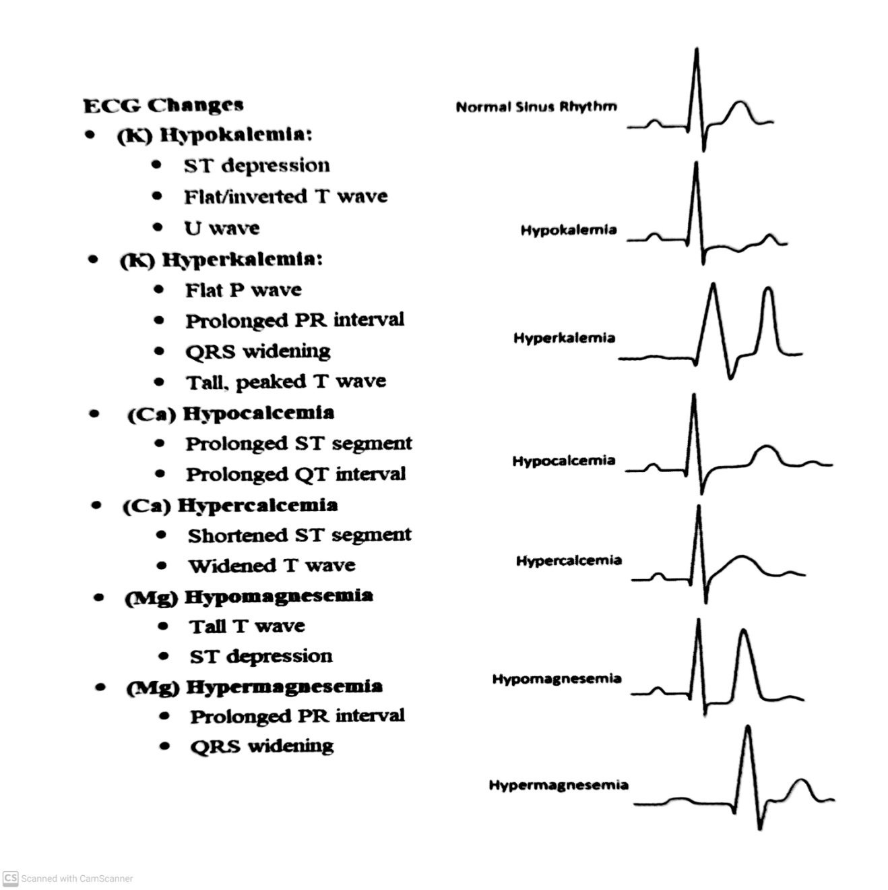
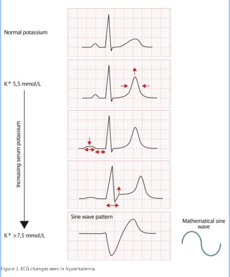
<a id="ب"></a>
| موضوع | فرمول / مقدار |
|---|---|
| سرعت کاغذ | ۲۵ mm/s → خانهٔ کوچک = ۰٫۰۴ s، خانهٔ بزرگ = ۰٫۲ s |
| گین | ۱۰ mm/mV |
| ضربان (منظم) | ۳۰۰ ÷ خانهٔ بزرگ · یا ۱۵۰۰ ÷ خانهٔ کوچک |
| ضربان (نامنظم) | تعداد QRS در ۶ ثانیه × ۱۰ |
| PR | ۰٫۱۲ – ۰٫۲ s |
| QRS | < ۰٫۱۲ s (۳ خانهٔ کوچک) |
| QT | مرد ≈ ۰٫۴۲ s · زن ≈ ۰٫۴۵ s (بسته به HR) |
| موج P | عرض ≤ ۳ mm · ارتفاع ≤ ۲٫۵ mm |
| موج Q پاتولوژیک | ≥ ۰٫۰۴ s یا ≥ ۲۵٪ ارتفاع R |
| محور نرمال | ۳۰-° تا ۹۰+° |
| LVH (Sokolow-Lyon) | S(V1) + R(V5 یا V6) > ۳۵ mm |
| LVH (Cornell) | R(aVL) + S(V3) > ۲۸ mm مرد / ۲۰ mm زن |
| ولتاژ پایین | تمام لیدهای اندامی < ۵ mm یا تمام پرشی < ۱۰ mm |
| fQRS | حساسیت ۸۶٪ / ویژگی ۸۹٪ برای MI (در برابر Q wave: ۳۶٪ / ۹۹٪) |
<a id="پ"></a>
| English | فارسی |
|---|---|
| Electrocardiogram (ECG) | نوار قلب / الکتروکاردیوگرام |
| Limb / Precordial leads | لیدهای اندامی / پرشی |
| Bipolar / Augmented | دو-قطبی / تقویتشده |
| Axis · Contiguous leads | محور · لیدهای همجوار |
| Depolarization / Repolarization | دپولاریزاسیون / رپولاریزاسیون |
| Atrium / Ventricle / Septum | دهلیز / بطن / سپتوم |
| Ischemia / Infarction | ایسکمی / انفارکتوس |
| Arrhythmia · Bradycardia · Tachycardia | آریتمی · برادیکاردی · تاکیکاردی |
| Bundle branch block | بلوک شاخهای |
| Fragmented QRS | QRS قطعهقطعه |
| Hypertrophy (LVH/RVH) | هایپرتروفی بطن چپ/راست |
| Hyperkalemia / Hypokalemia | هیپرکالمی / هیپوکالمی |
| Accessory pathway (WPW) | مسیر فرعی |
| Delta wave | موج دلتا |
| Transition zone | ناحیهٔ گذر (پیشرفت R) |
| R wave progression | پیشرفت موج R |
| Amplitude / Width | ارتفاع / پهنای کمپلکس |
| Calibration | کالیبراسیون |
<a id="ت"></a>
| مورد | مقدار |
|---|---|
| منبع صوتی | ۳۱ فایل .m4a استخراجشده از خود فایل pptx — مجموع ۳۲:۰۷ |
| اسلایدهای دارای روایت | ۱ تا ۳۶ (۳۱ قطعه؛ چند اسلاید دو قطعه دارند) |
| موتور فارسی | ۶ جریان مستقل: (afftdn+loudnorm) و (پیکنرمال+RNNoise) و (پیکنرمالِ ساده) و (Hush/DeepFilterNet3) × دو مدل Vosk فارسی (small-fa-0.42 و 0.5) |
| روش | همترازی واژهبهواژه با مهر زمانی و رأیگیری (ROVER) + ۹۹ تصحیح واژگانی تخصصی |
| تأیید چندجریانی | ۹۰٫۵٪ واژهها با توافق ≥۲ جریان مستقل |
| متن خام | transcript-fa-v3.md (توافقی، ۳۵۰۰ واژه) و .json (با رای و اطمینان هر واژه) |
| گزارش دقت | asr-accuracy.md — همهٔ مسیرهای رفتوشده (PyPI/npm/HF/GitHub) و اعداد |
🟡 آنچه این جزوه نیست: «نقلقول کلمهبهکلمه». بازسازیِ 🎙 از دلِ متن ماشینی و متن اسلاید
ساخته شده است. 🔴 بخشهای ناخوانا صریحاً علامت خوردهاند و شرحشان از اسلاید آمده.
برای استناد دقیق، فایل صوتی را بشنوید (پوشهٔ
audio/).